Topological Data Analysis
Discovering the shape of your data
John Waczak
Scientific Computing
9/28/2020
To explore today's presentation and the acompanying jupyter notebooks, visit our github repository.
Outline:
-
Topology
Key concepts, definitions, and an interesting theorem
-
Why should you care?
Noisy data,
-
Persistence Homology
Simplicial Complexes, generating Ripser graphs, persistence diagrams
-
Data Embeddings
Knotted data, sliding window embeddings
-
Demo
Topology Overview
A topological space is a set endowed with a special structure called a topology which allows us to define a notion of "open" and "closed" sets.
Examples of open sets in Rn
-
-
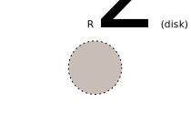
-
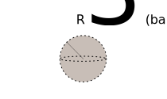
Once we have a notion of open sets, we can define what it means for a function to be continuous.
Def: If a function, f, between two topological spaces is continuous and has a continuous inverse, we call f a homeomorphism
Topologists use homeomorphisms to classify different types of geometric structures
Homeomorphisms in R2
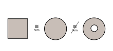A coffee cup "is" a donut

Surface Classification Theorem:
Every compact (closed and bounded), connected, two-dimensional manifold is homeomorphic to the sphere, a connected sum of tori, or a connected sum of real projective planes
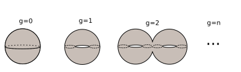In other words, we can classify surfaces by how many "holes" they have!
Why should you care?
Data has shape, and shape has meaning.
The shape of data is resistant to noise
-
No noise
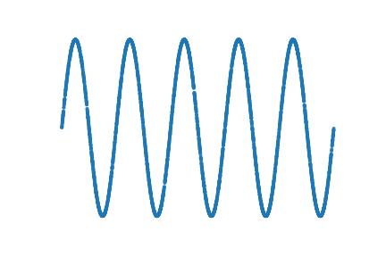 -
Some noise
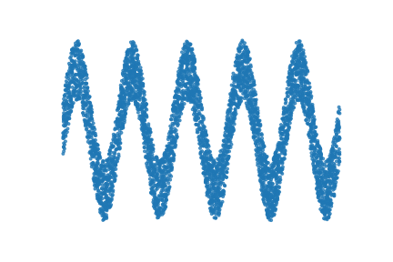 -
A lot of noise
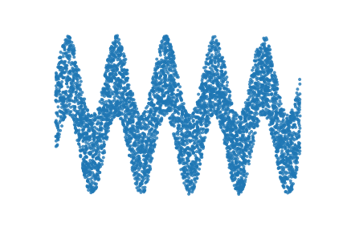
How can we programaticllay discover shape in our datasets?
Answer: Persisent Homology
Homology refers to the mathematical method of distinguishing objects by characterizing the types of "holes" they contain.
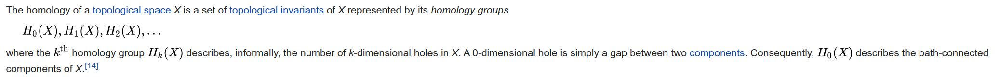There's still one problem:
Our raw data looks like this (in 2 dimensions or more...):
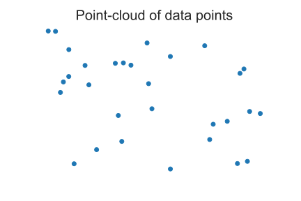Every hole is a hole of dimension 0...
Alternatively, we could connect every pair of points to form a graph
This does not help us decide which holes are truly meaningful.

Instead, let's slowly create a graph and keep track of which topological features persist as the graph is built.
This is the idea of Persistent Homology with Ripser graphs.
For each radius, we obtain a corresponding network
This means we can track all of the H0, H1, H2, etc... hole types as a function of the radius.
Those features that persist as the radius increases correspond to meaningful shapes in your data.
Example 1: Data forms a circle
Example 2: Data forms a torus

Outlier detection and time-dependent shape
Final topic: embeddings in higher dimensions
Usually, we like to take high dimensional data and some how reduce it to a simpler representations that requires fewer varaibels
Examples:PCA, ICA, t-SNE, etc...
What if your data has a topological obstruction that makes it hard to analyze in the number of dimensions you currently have?
Some datasets exhibit self intersections in low dimensions
Ex1: Mobius Strip
If you could but look in higher dimensions...
Ex1: Mobius Strip in 3d has no self intersections
It may be possible to remove self-intersection in higher dimensions
Ex2: The Klein bottle self intersects in 3d, but not 4d.
Important features of you data could be knotted together
This kind of issue tends to fool most ML classifiers.
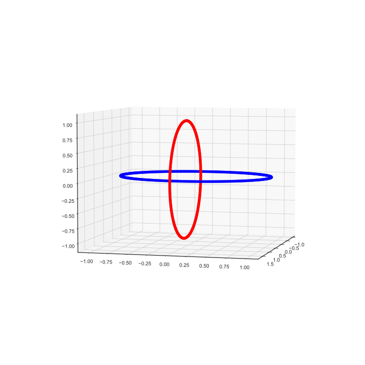For time series data, we can deal with this problem via Sliding Window Embeddings
Example:
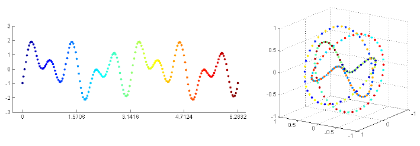Summary:
-
Topology
We can characterize objects by their topological features (holes).
-
Why should you care?
Data has shape, shape has meaning.
-
Persistence Homology
A way to compute topological features of your data.
-
Sliding Window Embeddings
A way to generate higher dimensional object from low dimensional data
(To give you something to analyze)